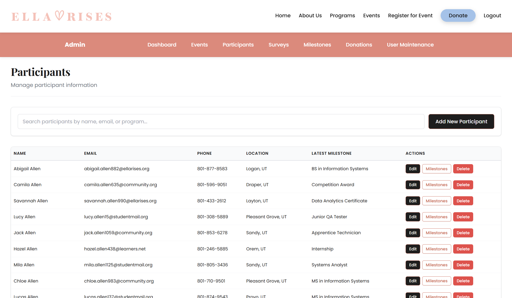

Ella Rises Nonprofit Platform (INTEX Project)
2025

Public-facing homepage introducing the nonprofit mission and programs.
Platform Views


Overview
Built a full-stack, multi-role web platform for the nonprofit Ella Rises as part of BYU’s Information Systems INTEX project. The application supports role-based access for administrators and participants, enabling event registration, progress tracking, surveys, and administrative reporting.
My Contributions
- Built participant dashboards and event registration workflows.
- Implemented multi-role authentication for admins and participants.
- Contributed to AWS RDS deployment and HTTPS setup using Nginx.
- Collaborated with a team to develop surveys, milestones, and admin reporting tools.
Technologies Used
Node.js, Express, EJS, PostgreSQL, AWS (RDS, EC2), Nginx